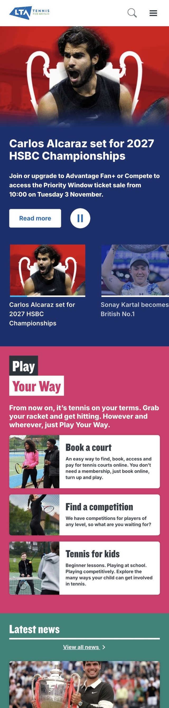
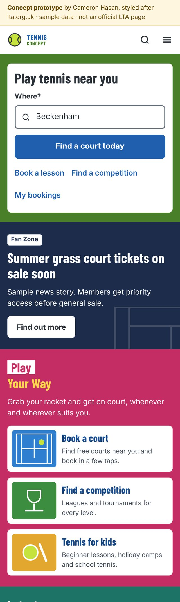

Step 1
Home and menu
Works well: clear sections, and the Play Your Way cards make the options easy to understand.
Opportunities
- Booking sits below the news, after a long scroll.
- In the menu, it's two levels deep under Play.
What I tried
- A "Play tennis near you" search at the top of the home page.
- "Book a court" as the first item in the menu.